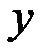
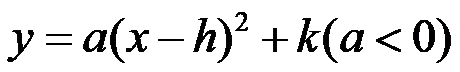
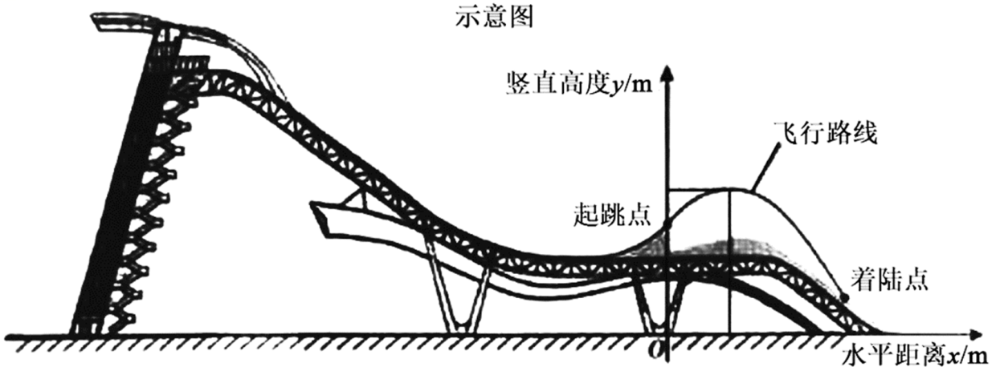
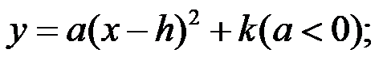
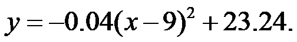
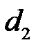
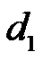

2022年北京市中考数学真题 · 数学解答题 第25题
25. 单板滑雪大跳台是北京冬奥会比赛项目之一，举办场地为首钢滑雪大跳台，运动员起跳后的飞行路线可以看作是抛物线的一部分，建立如图所示的平面直角坐标系，从起跳到着陆的过程中，运动员的竖直高度

（单位：m）与水平距离 （单位：m）近似满足函数关系
（单位：m）近似满足函数关系
．
某运动员进行了两次训练．
（1）第一次训练时，该运动员的水平距离与竖直高度的几组数据如下：
水平距离x/m | 0 | 2 | 5 | 8 | 11 | 14 |
竖直高度y/m | 20.00 | 21.40 | 22.75 | 23 20 20 | 22.75 | 21.40 |
根据上述数据，直接写出该运动员竖直高度的最大值，并求出满足的函数关系

（2）第二次训练时，该运动员的竖直高度y与水平距离x近似满足函数关系

记该运动员第一次训练的着陆点的水平距离为d1，第二次训练的着陆点的水平距离为
，则
______（填“>”“=”或“<”）．